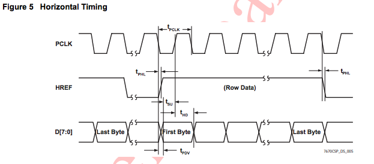

Lab 4: FPGA and Shape Detection
In this lab we split into two teams to develop an FPGA module capable of detecting basic shapes from a camera input, and pass this information on to the Arduino. This device will be mounted on the robot to identify these shapes on the walls of the maze.
Pre-Lab: PLL
In the pre-lab, we learned key things about the FPGA we are using, the DE0-Nano, and the camera we are using, the OV670. Knowing these facts will allow us to perform image processing.
Embedded memory on the FPGA is 74.25 kB; this is the maximum size of the buffer. Since the camera has 640x480 pixels at full resolution, with a maximum of 3 bytes per a pixel, neither color resolution nor resolution can be used at full capacity. Each entry in the ram has a minimum size of 8 bits, so the maximum number of entries for the minimum size is 76032.
Of the available pixel formats, the RGB565 (16bits/pixel) format provides the most information on the base colors making up each pixel.
In order to convert that pixel format to be accepted by the VGA module, (RGB565 to RGB332), we will use the following diagram:

Based on the timing diagrams on page 7 of the camera data sheet, we will sample on the positive edge of HREF.
Arduino Team
Nathalia and Vini worked on the arduino team.
Materials Used:- OV7670 Camera
- Arduino Uno
- DE0-Nano FPGA board
Camera Set Up: Registers
We began by looking through the documentation for the registers that were related to six main functionalities:1)resetting the registers 2)scaling 3)using external clock as internatl 4)pixel resolution 5)color bar 6)vertical and mirror image manipulation.
After determining the relevant resistors and their addresses (please see table for details), we defined these at the top of the code. We then sought the values needed to enable the desired properties -- enable scaling, enable colorbar, etc. These are marked by bold numbers in the third column. We then converted the values from binary to hex and obtained the 'write' values for all registers. In the write key register function, we began by resetting registers to their original values before writing the enable values. As the reading and writing address of the camera differs by the value of the last bit, 0 for write and 1 for read, we defined the camera address to the first seven bits, the last bit was dependant on whether the function calling the address was for reading or writing.
Camera Set Up: Wiring To FPGA
We intially struggled with creating the proper connections between the FPGA board and the OV7670 Camera, as in the documentation, the diagram for GPIO-0 is to the left of GPIO-1 and the first pin for both GPIO beds is at the top. However, on the FPGA board, the GPIO-1 is to the left of GPIO-0 and the first pin for GPIO-1 is at the bottom of the board, diagonal to the first pin of GPIO-0.| Functionality | Register Description | Register ‘Write’ Values | Bit Adjustments |
|---|---|---|---|
| Reset all registers | Common Control 7 COM7 Default Hex: 00 Address Hex: 12 | 10000000 ************ 0x80 | SCCB Register Reset is Bit[7]; 0 is no change 1 Resets all registers to default values |
| Enable Scaling | Common Control 3 COM3 Default Hex: 00 Address Hex: 0C | 00001000 ************ 0x08 | Scale Enable is Bit[3]; 0 is disable 1 is enable |
| Use external clock as internal clock | Internal Clock CLKRC Default Hex: 80 Address Hex: 11 | 11000000 ************ 0xC0 | Bit[7]: Reserved Bit[6]: Use external clock as internal (no clock prescale available) |
| Set the camera to output the resolution you specified in Q4 and the pixel format you specified in Q2. The pixel format will take setting an extra register to fully specify | Common Control 7
COM7
Default Hex: 00
Address Hex: 12 _________________ Common Control 15 COM15 Default Hex: C0 Address Hex: 40 |
00001110
************
0x0E (*combined with QCIF output format and color bar activation) _____________ 11010000 ************ 0xD0 |
Bit[2] is RGB Selection (COM7[0] = 0 and COM7[2] =1) ___________________ Bit[7:6] = 11 (sets output range [00] to [FF]) Bit[5:4] is RGB 555/565 (must set COM7[0] = 0 and COM7[2] =1) |
| Enable a color bar test (takes setting 2 regs, neither of them are the SCALING regs) | Common Control 17
COM17
Default Hex: 8
Address Hex: 42 _________________ Common Control 7 COM7 Default Hex: 00 Address Hex: 12 |
00001000
************
0x08 ______________ 00001110 ************ 0x0E (*combined with QCIF output format and rgb selection) |
DSP Color Bar Enable
Bit[3];
0 is disable
1 is enable ______________________ Color Bar Bit[1]; 0 is disable 1 is enable |
| Vertical and mirror flip the output image (optional) | MVFP Default Hex: 00 Address Hex: 1E | 00110000 ************ 0x30 | Mirror/VFlip Enable
Bit[5] is Mirror
0 is normal
1 is mirror Bit[4] is VFlip 0 is normal 1 is vertically flip image |
With this table in mind, we began our main program in the "Set Up" section of the code. We wanted to use serial to ensure that our register values were what we expected, so we set that up. Next, we called the subroutine functions write_key_registers() and read_key_registers(), both of which are included below.
///////// Main Program ////////////// void setup() { Wire.begin(); Serial.begin(9600); // TODO: READ KEY REGISTERS OV7670_write_register(CC7, 0x80);//resets all registers read_key_registers(); delay(100); // TODO: WRITE KEY REGISTERS write_key_registers(); set_color_matrix(); read_key_registers(); }
void read_key_registers(){
/*TODO: DEFINE THIS FUNCTION*/
Serial.println("Common Control 7");
Serial.println(read_register_value(CC7),HEX);
Serial.println("Common Control 3");
Serial.println(read_register_value(CC3),HEX);
Serial.println("Internal Clock");
Serial.println(read_register_value(IC),HEX);
Serial.println("Common Control 15");
Serial.println(read_register_value(CC15),HEX);
Serial.println("Common Control 17");
Serial.println(read_register_value(CC17),HEX);
Serial.println("MVFP");
Serial.println(read_register_value(MVFP),HEX);
}
String write_key_registers(){
OV7670_write_register(CC7, 0x80); //setting to 1 resets all registers
delay(100);
OV7670_write_register(CC3, 0x08); //setting to 1 enables scale control
OV7670_write_register(IC, 0xC0); //IC selection
OV7670_write_register(MVFP, 0x30); //Vertical & mirror flip
OV7670_write_register(CC7, 0x0C); //Color & RGB bar selection
OV7670_write_register(CC15, 0xD0); //Color Pixel
OV7670_write_register(CC17, 0x00); //Color Bar
}

Communicating with FPGA

FPGA Team
Joyce and Priya worked on the FPGA
Materials Used:- DE0-Nano FPGA board
- VGA adapter
The FPGA module are connected as shown in the following diagram.

PLL Clock
We need three clock output from FPGA: a 24MHz clock for camera, a 25MHz clock to drive VGA, and a 50 MHz one for memory. FPGA can generate at 50MHz clock, and we will use Phase-locked loop (PLL) to generates clock with different frequencies. This module takes the original 50MHz clock as input and output 3 clock lines, which are connected to their respective modules.
Downsampler
The downsampler module is responsible for updating address and writing data to mem. For x address, we update the address every other PCLK cycle. This is because the Arduino sends color format in RGB565, a total of 2 bytes, but every PCLK cycle only transmits one byte. Therefore, we implement a register that toggles every cycle ot keep track of whether it is the lower bits of the full RGB565 data or the higher bits of the RGB565 data. When it finish reading the lower bits, the x address will be incremented, and it also enables the memory write to store that data into RAM. X address is reset after the end of each row, which is indicated by the negedge of HREF. For my implementation, I write x address as 0 whenever HREF is low. To update the y address, we increment it every time there is a new row coming, the same time as we reset x to zero. Resetting the x address and y address happens when there is a new picture frame coming, which is indiacted by VSYNC. The data communicaiton is as illustrated below. As shown in the picture, there is only valid data when HREF is high. Once HREF go down, we know that there is a new row coming.
Besides updating the address, downsampler also downsamples the data to RGB332. This is done simply be selectign the correct bits from the Arduino input.
Image Processor
Image processor takes input from memory, pixel by pixel. Then it determines whether the pixel is red or blue, or neither. If it is a red pixel, then the red_count will be incremented; vice versa. Then, at then end of each picture frame, it will determine whether the frame is dominated by red or blue (passing a threshold), then sends Arduino a 8 bit data. The data it sends back is one byte. The first bit(MSB) indicates red treasure found, the second bit indicates blue treasure found. The remaining 6 bits are set to zero now but will be used to indicate the shape of the treasure in the future.
Buffer Test

The development of FPGA uses a test driven design approaceh. The first step we did is to see whether the template program with PLL set up can correclty output the blue screen. Then, we write a test pattern -- Green background with a red diagonal line -- directly to VGA output to verify that we are correctly communicating with the VGA adapter.
Color Bar Test

We were able to get the correct color for the color bar test but it is not ordered correctly. The first color bar we got looks like the one below:

Then, we figured we are not setting the Y address correctly, so the colors are not reading out in order and it partially overwrite the data in memory in a skewed way. After we changed that to have the y address triggered correctly then we were able to read the proper color. The ordering happends, I suspect, because of the wrong reading order of RGB565.
As of the camera live input, the best I could get to is to have the correct image output with a significant delay. I suspect this is becasue the memory write enable or clock is not handled properly. The result is that the camer will capture a frame, then that frame will be displayed a few seconds later. It is also very sensitive to wiring. If I pull the camera one way, it updates, but when I pull the other way, then there is no response. I am not sure what exactly is the issue. The color is wrong, of course, since we don't have the correct color ordering from color bar, so the color of the data is also stored in a wrong order.
Work Distribution
The Lab 4 Work Distribution is as follows:
- Nathalia and Vini worked on the arduino team
- Joyce and Priya worked on the FPGA team
The Lab 4 Report Work Distribution is as follows:
- Nathalia and Vini worked on the arduino write up
- Joyce and Priya worked on the FPGA write up
- Joyce and Vini documented photos, Nathalia edited and uploaded photos
The website work distribution is as follows:
- Nathalia: Website Set Up and Maintenance